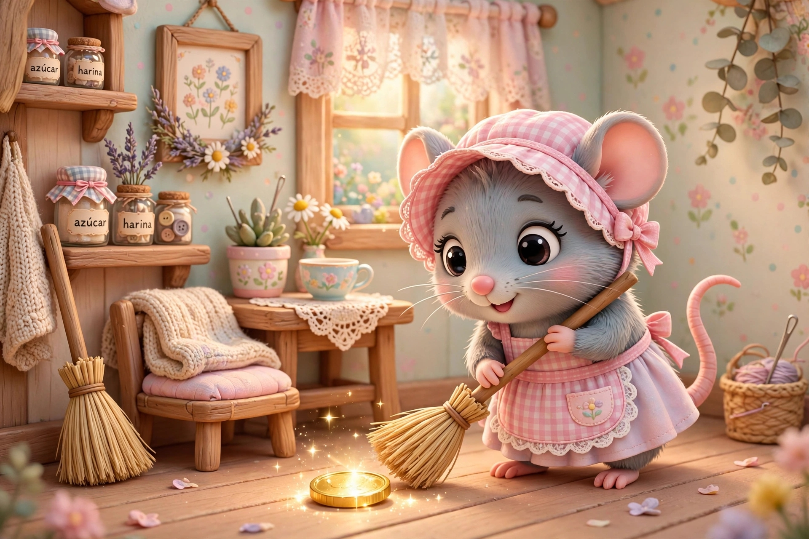
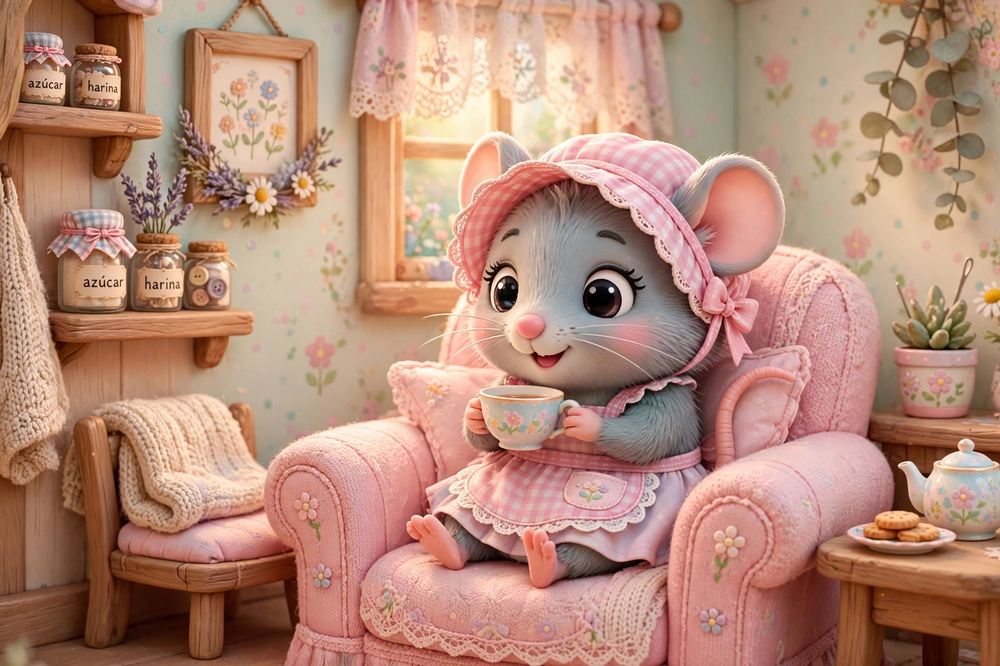

Érase una vez una ratita que era muy presumida. Un día estaba barriendo su casita, cuando de repente encontró en el suelo algo que brillaba: era una moneda de oro. La ratita la recogió del suelo y dichosa se puso a pensar qué se compraría con la moneda. “Ya sé, me compraré caramelos. ¡Oh no!, se me caerán los dientes. Pues me compraré pasteles. ¡Oh no! me dolerá la barriguita. Ya sé, me compraré un lacito de color rojo para mi rabito.” La ratita guardó la moneda en su bolsillo y se fue al mercado. Una vez en el mercado le pidió al tendero un trozo de su mejor cinta roja. La compró y volvió a su casita. Al día siguiente, la ratita se puso el lacito en la colita y salió al balcón de su casa para que todos pudieran admirarla. En eso que aparece un gallo y le dice: — Ratita, ratita tú que eres tan bonita, ¿te quieres casar conmigo? Y la ratita le dijo: —No sé, no sé, ¿tú por las noches qué ruido haces? —Yo cacareo así: quiquiriquí —respondió el gallo. —¡Ay, no!, contigo no me casaré, me asusto, me asusto —replicó la ratita con un tono muy indiferente. Se fue el gallo y apareció el perro: — Ratita, ratita tú que eres tan bonita, ¿te quieres casar conmigo? Y la ratita le dijo: —No sé, no sé, ¿tú por las noches qué ruido haces? —Yo ladro así: guau, guau — respondió el perro. —¡Ay, no!, contigo no me casaré, me asusto, me asusto —replicó la ratita sin ni siquiera mirarlo. Se fue el perro y apareció el cerdo. — Ratita, ratita tú que eres tan bonita, ¿te quieres casar conmigo? Y la ratita le dijo: —No sé, no sé, ¿tú por las noches qué ruido haces? —Yo gruño así: oinc, oinc— respondió el cerdo. —¡Ay, no!, contigo no me casaré, me asusto, me asusto —replicó la ratita con mucho desagrado. El cerdo desaparece por donde vino, llega un gato blanco y le dice a la ratita: — Ratita, ratita tú que eres tan bonita, ¿te quieres casar conmigo? Y la ratita le dijo: —No sé, no sé, ¿tú por las noches qué ruido haces? —Yo maúllo así: miau, miau— respondió el gato con un maullido muy dulce. —¡Ay, sí!, contigo me casaré, tienes un maullido muy dulce. La ratita muy emocionada, se acercó al gato para darle un abrazo y él sin perder la oportunidad de hacerse a buen bocado, se abalanzó sobre ella y casi la atrapa de un solo zarpazo. La ratita pegó un brinco y corrió lo más rápido que pudo. De no ser porque la ratita no solo era presumida sino también muy suertuda, esta hubiera sido una muy triste historia. Y colorín colorado, este cuento se ha acabado.

Versión escrita por Paola Artmann
Volver al inicio